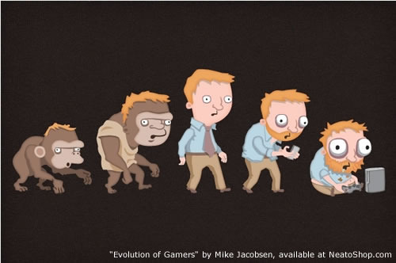

Wed, 01 Dec 2010 04:05:00 · Games · gamers · Neatorama · Design · Evolution
The evolution of gamers ^_^

Yup, Darwinian can be a real bitch..! If you like, get the t-shirt at Neatorama shop.
Wed, 01 Dec 2010 04:05:00 · Games · gamers · Neatorama · Design · Evolution

Yup, Darwinian can be a real bitch..! If you like, get the t-shirt at Neatorama shop.